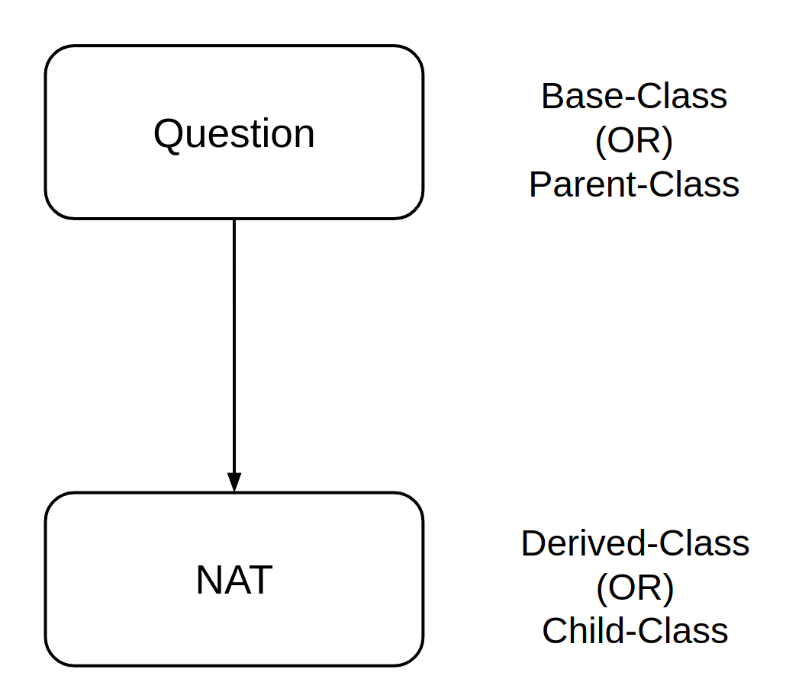

Lesson 8.3
Inheritance
Let us get back to the fundamental philosophical idea with which we began the study of object oriented programming.
Unity in diversity.
The idea of a class represents the unity, the idea of objects represent the diversity. But this diversity that we see around us is not chaotic and unordered. On the contrary, there is an organized hierarchy that we see almost everywhere around us. Consider the following image:

We humans take up different roles. Some of us are students, others are working professionals. The beauty of this program is that we have working professionals who are at the same time students. Getting back to the point, we see that there is a hierarchy. All college students are students. All students are humans. In the other branch of this directed graph, all full-stack developers are software developers, all software developers are working professionals. The basic idea behind the concept of inheritance is this:
Classes that are lower in the hierarchy inherit features or attributes from their ancestors.
There are certain features of a class higher up in the hierarchy that can be inherited by classes lower in the hierarchy. For example, all working professionals draw a salary every month. All software developers also draw some monthly salary, because they belong to the class of working professionals. So, salary is an attribute that is common to all classes that are derived from the class of working professionals. Needless to say, a full stack developer inherits this attribute of salary from his ancestors in the graph.
We shall take up a concrete example and see inheritance in action.
Concrete Example
By now you would have worked on plenty of assignments across multiple courses. Each assignment is a collection of questions. Questions come in different types, some are NAT, some MCQ. So, a NAT question is not of the same type as a MCQ question. Yet, both are questions. So, we see that there is a hierarchy of relationships here:

Parents always come first in the hierarchy. So, let us first define a class to represent a question:
Note that we have only retained those elements as attributes that are common to all questions, irrespective of the type:
- statement of the question
- marks for the question
The next step is to define two new classes for the children of Question, one for MCQ and the other for NAT. It is here that we make use of the relationship that we just diagrammed:
NAT is also a Question, but a specialized question. Specifically, it has an additional feature, answer, and a new method, update_answer. But all the other attributes and methods of Question are inherited by it, since NAT is just another Question.
We say that NAT is derived from Question. Question becomes the parent-class or base-class , and NAT is a child-class or derived-class.

In Python, the syntax used to make this dependency explicit is as follows:
class Derived(Base):
def __init__(self, ...):
pass
#### OR ####
class Child(Parent):
def __init__(self, ...):
...
In our specific example, we have:
Parent-child relationship
Note that something interesting happens within the constructor of the derived class:
The super() function points to the parent class, in this case Question. So, in line 13, we are effectively calling the constructor of the parent class. If we need to update the marks, we can just invoke the method update_marks() that is inherited from Question:
Method Overriding
Let us now turn our attention to methods. Pasting the parent-class here for easy reference:
Sometimes we may want to modify the behaviour of existing methods in the parent class. For example, take the case of a MCQ question. For questions of this type, the statement of a problem is incomplete without the options. The print_question() method in the parent class just prints the statement, but it makes more sense to print the options as well for a MCQ question. So, we want the print_question() to behave differently. Though we have inherited this method from the parent class, we can override the behaviour of the method in the following way:
Note that the parent class Question already prints the statement. So, we piggy-back on this behaviour using the super() function in line-8. In addition, we also print the options. Let us create a MCQ question object and see how it all works:
This returns the output: